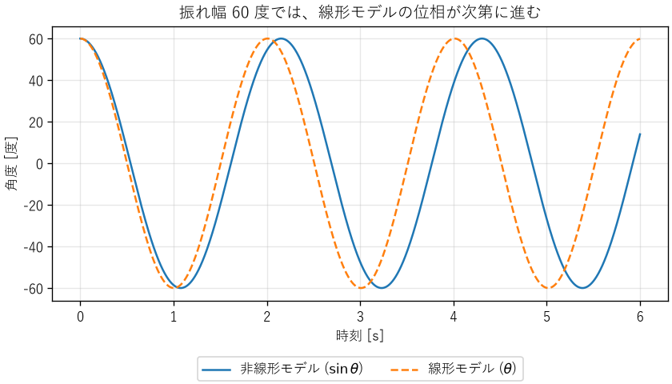
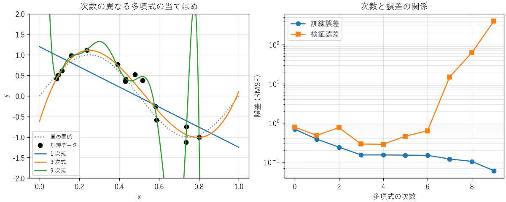

3. モデル化と近似
エンジニアは、作る前に振る舞いを予測するために、対象を単純化したモデルを使います。本章では、モデルの種類、近似の方法、モデルの適用範囲の考え方を説明します。
3.1. モデルとは何か
モデルとは、対象の本質的な性質だけを取り出し、それ以外を省略した表現です。地図が土地のすべてを描かずに、目的に必要な道や建物だけを描くのと同じです。工学では、対象の振る舞いを数式で表した数理モデルを主に使います。
統計学者ジョージ・ボックスは「すべてのモデルは間違っているが、役に立つものもある」と述べました。モデルは必ず何かを省略しているので、現実と完全には一致しません。大切なのは、目的に対して十分に正確かどうかです。
モデルは、作り方によって次の 3 種類に分けられます。
種類 |
作り方 |
長所と短所 |
|---|---|---|
物理モデル |
物理法則（運動方程式、回路の法則など）から式を導く |
適用範囲の外でもある程度信頼できる。導出に専門知識が必要 |
経験モデル |
測定データに簡単な式を当てはめる |
作るのが簡単。データの範囲の外では信頼できない |
データ駆動モデル |
大量のデータから機械学習などで関係を学習する |
複雑な関係を表せる。根拠の説明が難しく、データの範囲の外では予測が保証されない |
実際には、物理モデルの未知のパラメーターを測定データから決める、というように、これらを組み合わせて使うことがよくあります。
3.2. モデル化の手順
モデル化は、おおむね次の手順で進めます。
目的を決める: 何を予測したいのか、どの程度の精度が必要なのかを決めます。目的によって、同じ対象でも適したモデルが変わります。
仮定を置く: 無視する現象を決め、明記します（例: 空気抵抗を無視する、温度は一様とみなす）。
式を立てる: 物理法則や測定データから、入力と出力の関係を式にします。
解く: 式を解析的に、または数値計算で解きます。
検証する: 実験データや、より詳しいモデルの結果と比べ、目的の精度を満たすかを確かめます。満たさなければ、仮定を見直します。
手順 2 の仮定は、モデルの適用範囲を決めるものです。仮定を書き残しておかないと、後でモデルを使う人が、適用範囲の外で使ってしまう危険があります。
3.3. 線形化
多くの物理現象は非線形ですが、非線形の式は解析が難しくなります。そこで、注目する動作点の近くで、関数を 1 次式で近似する線形化がよく使われます。関数 \(f(x)\) を点 \(x_0\) のまわりでテイラー展開すると、次のようになります。
\(x\) が \(x_0\) に十分近ければ 2 次以降の項は小さいので、最初の 2 項で近似できます。代表的な近似を次に示します（\(x\) は 0 に近いとします）。
近似式 |
使われる場面の例 |
|---|---|
\(\sin x \approx x\) |
振り子、小さな角度の光学 |
\(\cos x \approx 1 - x^2/2\) |
傾きによる長さの変化 |
\((1 + x)^n \approx 1 + nx\) |
根号や逆数を含む式の近似（例: \(1/(1+x) \approx 1 - x\)） |
\(e^{x} \approx 1 + x\) |
小さな成長率の複利計算 |
\(\ln(1 + x) \approx x\) |
相対変化の計算 |
3.3.1. 例: 振り子
長さ \(L\) の糸の先におもりを付けた振り子の運動方程式は、糸と鉛直線のなす角を \(\theta\) とすると、次のようになります。
\(\sin\theta\) を含むため、この式は非線形で、初等関数では解けません。振れ幅が小さいときは \(\sin\theta \approx \theta\) と近似でき、次の線形の式になります。
この式の解は \(\theta(t) = \theta_0 \cos(\omega_0 t)\)、ただし \(\omega_0 = \sqrt{g/L}\) で、周期は \(T_0 = 2\pi\sqrt{L/g}\) です。第 2 章の次元解析で決まらなかった定数は \(2\pi\) でした。線形モデルでは、周期は振れ幅によりません。
では、振れ幅がどこまで大きくなると、この近似が使えなくなるのでしょうか。ch03_pendulum.py は、長さ 1 m の振り子について、厳密な周期と線形モデルの周期を比べます。
振れ幅[°] 厳密な周期[s] 線形モデル[s] 誤差[%]
5 2.0074 2.0064 -0.05
10 2.0102 2.0064 -0.19
20 2.0218 2.0064 -0.76
30 2.0413 2.0064 -1.71
45 2.0866 2.0064 -3.84
60 2.1532 2.0064 -6.82
90 2.3682 2.0064 -15.28
振れ幅 10° までなら誤差は 0.2 % 未満で、多くの目的に十分です。60° では誤差が約 7 % になり、図 3.1 のように、線形モデルの波形は時間とともに実際の波形からずれていきます。


図 3.1 振れ幅 60° の振り子（非線形モデルと線形モデルの比較）
厳密な周期は、サンプルコードの exact_period 関数で計算しています。厳密な周期は第 1 種完全楕円積分で表され、算術幾何平均（AGM）を使うと少ない計算で正確に求められます。
55def exact_period(theta0: float) -> float:
56 """振れ幅 theta0 [rad] のときの厳密な周期を返す。
57
58 厳密な周期は第 1 種完全楕円積分で表され、算術幾何平均を使うと
59 T = 2π√(L/g) / AGM(1, cos(θ0/2)) で計算できます。
60 """
61 return linear_period() / agm(1.0, math.cos(theta0 / 2))
このように、近似を使うときは、どの範囲で誤差がどの程度になるかを確かめ、適用範囲として明記します。
3.4. 類似性（アナロジー）
異なる分野の現象が、同じ形の微分方程式で表されることがあります。たとえば、ばね・質量・ダンパーからなる機械系と、抵抗・コイル・コンデンサーからなる電気回路は、次のように同じ形の式になります。
役割 |
機械系 |
電気系 |
|---|---|---|
状態を表す量 |
変位 \(x\) |
電荷 \(q\) |
変化の速さ |
速度 \(dx/dt\) |
電流 \(i = dq/dt\) |
慣性（変化を妨げる） |
質量 \(m\) |
インダクタンス \(L\) |
エネルギーの散逸 |
減衰係数 \(c\) |
抵抗 \(R\) |
エネルギーの蓄積 |
ばね定数 \(k\) |
静電容量の逆数 \(1/C\) |
外から加えるもの |
力 \(F\) |
電圧 \(V\) |
同じ形の式は同じ振る舞いをするので、一方の分野で得た知識を他方に使えます。熱の流れ（温度差・熱抵抗・熱容量）や流体の流れ（圧力差・管路抵抗）にも、同様の対応があります。たとえば、電子部品の発熱と温度上昇は、電気回路の RC 回路と同じ 1 次遅れの式で表せます（第 6 章）。
3.5. ソフトウェアのモデル: 待ち行列
モデル化は物理現象だけのものではありません。サーバーの応答時間のように、ソフトウェアシステムの性能もモデルで予測できます。
リクエストが平均到着率 \(\lambda\) [件/s] でランダムに到着し、1 台のサーバーが平均処理率 \(\mu\) [件/s] で処理する系を考えます。到着の間隔と処理時間がどちらも指数分布（付録の数学の補足を参照）に従う場合（M/M/1 待ち行列）、サーバーの利用率 \(\rho\) と、リクエストがシステムに滞在する平均時間 \(W\) は次のようになります。
平均処理時間 \(1/\mu\) が 10 ms のサーバーで、利用率と平均滞在時間の関係を計算すると、次のようになります。
利用率 \(\rho\) |
平均滞在時間 \(W\) |
処理時間に対する倍率 |
|---|---|---|
0.5 |
20 ms |
2 倍 |
0.8 |
50 ms |
5 倍 |
0.9 |
100 ms |
10 倍 |
0.99 |
1000 ms |
100 倍 |
利用率が 1 に近づくと、待ち時間は急激に長くなります。「CPU 使用率が 90 % なら、まだ 10 % の余裕がある」とは言えないことが、このモデルから分かります。
もう 1 つ、待ち行列の基本的な関係にリトルの法則があります。系が定常状態にあるとき、系の中にいる平均の件数 \(L\)、平均到着率 \(\lambda\)、平均滞在時間 \(W\) の間には、到着や処理の分布によらず次の関係が成り立ちます。
たとえば、毎秒 200 件のリクエストが平均 50 ms ずつ滞在するなら、システムの中には平均 \(200 \times 0.05 = 10\) 件のリクエストがあります。同時に処理できる件数（スレッド数や接続数）の上限を決めるときに使えます。
3.6. 状態機械
ここまでのモデルは、連続的に変化する量を扱うものでした。一方、機器の動作モードや通信の手順のように、「待機」「加熱」「異常」といった区別できる状態の間を、イベントをきっかけに移り変わる対象もあります。このような振る舞いは、状態機械（有限状態機械）でモデル化します。状態機械は、組込みソフトウェアの設計で最もよく使われるモデルの 1 つで、通信プロトコルや業務システムの画面遷移にも使われます。
状態機械は、次の要素で表します。
要素 |
意味 |
|---|---|
状態 |
システムがとりうる区別された状況（待機、加熱、保温、異常など） |
イベント |
状態を変えるきっかけ（ボタンが押された、センサーが沸騰を検出した、など） |
遷移 |
ある状態で、あるイベントが起きたときに移る先の状態 |
動作 |
各状態で行うこと、または遷移のときに行うこと（ヒーターの通電など） |
ch03_state_machine.py は、電気ポットの制御を状態機械で表したものです。状態とイベントの組から次の状態を決める表（状態遷移表）を、辞書で表しています。
43# 状態遷移表: (現在の状態, イベント) -> 次の状態
44TRANSITIONS: dict[tuple[State, Event], State] = {
45 (State.IDLE, Event.START): State.HEATING,
46 (State.HEATING, Event.BOILED): State.KEEP_WARM,
47 (State.KEEP_WARM, Event.COOLED): State.HEATING,
48 (State.KEEP_WARM, Event.START): State.HEATING,
49 (State.ERROR, Event.RESET): State.IDLE,
50}
51
52# どの状態でも、安全に関わるイベントでは異常に移る
53for _state in (State.IDLE, State.HEATING, State.KEEP_WARM):
54 TRANSITIONS[(_state, Event.DRY)] = State.ERROR
55 TRANSITIONS[(_state, Event.SENSOR_FAULT)] = State.ERROR
56
57
コントローラーは、表にない組み合わせのイベントを受け取ると、例外を送出して拒否します。実行すると、次のように状態が移り変わります。
状態遷移表の性質を確認しました。
待機 --[沸騰ボタン]--> 加熱 ヒーター ON
加熱 --[沸騰を検出]--> 保温 ヒーター OFF
保温 --[設定温度を下回った]--> 加熱 ヒーター ON
加熱 --[沸騰を検出]--> 保温 ヒーター OFF
保温 --[空だきを検出]--> 異常 ヒーター OFF
拒否: 状態「異常」ではイベント「沸騰ボタン」を受け付けません
異常 --[リセット]--> 待機 ヒーター OFF
状態機械でモデル化すると、次の利点があります。
漏れを見つけやすい: すべての状態とイベントの組み合わせを表にすると、「加熱中にふたが開いたらどうするか」のような、考え漏れていた組み合わせに気付けます。
想定外の入力を確実に扱える: 表にない組み合わせを一律に拒否すれば、想定していない順序でイベントが来ても、システムがおかしな状態に入りません。
性質を機械的に確かめられる: 「異常の状態から抜けられるのはリセットだけ」「空だきを検出したら、どの状態からでも異常に移る」といった安全上の性質を、表を調べるだけで確かめられます。サンプルコードの
check_properties関数がその例です。
if 文を積み重ねて状態を管理するプログラムは、状態が増えると、どの条件でどこに移るのかが分かりにくくなります。状態遷移表を明示的に持つ設計は、状態遷移試験（第 12 章）とも対応付けやすくなります。
3.7. データ駆動モデルの検証
データ駆動モデル（経験モデルを含む）は、作るときに使ったデータによく合うように調整されます。そのため、手元のデータへの当てはまりの良さだけでは、モデルの良し悪しは判断できません。
3.7.1. 過学習
ch03_overfitting.py は、真の関係が \(y = \sin 2\pi x\) で、雑音を含む 15 点の模擬データに、次数の異なる多項式を当てはめます。当てはめに使ったデータ（訓練データ）での誤差と、当てはめに使っていない 200 点のデータ（検証データ）での誤差を比べた結果を次に示します。
次数 訓練誤差 検証誤差 5 分割交差検証
0 0.691 0.777 0.707
1 0.385 0.481 0.443
2 0.241 0.756 0.311
3 0.152 0.288 0.191
4 0.152 0.284 0.226
5 0.150 0.459 0.363
6 0.148 0.628 1.264
7 0.120 14.887 2.727
8 0.104 61.921 3.445
9 0.060 394.778 3.676
交差検証で選んだ次数: 3


図 3.2 多項式の次数と当てはめの様子（左）、誤差（右）
訓練誤差は、次数を上げるほど小さくなります。しかし検証誤差は、次数 3〜4 で最小になった後、急激に大きくなります。図 3.2 の左の 9 次式は、訓練データの点の近くを通るように大きく曲がり、点のない場所では真の関係から大きく外れています。このように、モデルが雑音まで覚えてしまい、新しいデータでの予測が悪くなる現象を過学習と呼びます。
3.7.2. 訓練データと検証データ
過学習を見抜くには、モデルを作るのに使わなかったデータで、予測の誤差を評価します。手元のデータを、モデルを作るための訓練データと、性能を評価するための検証データに分けるのが基本です。最終的な性能を報告するときは、モデルの選択にも使っていない、さらに別のデータ（テストデータ）で評価します。
データが少なく、検証用に分ける余裕がない場合は、交差検証を使います。\(k\) 分割交差検証では、データを \(k\) 個のグループに分け、1 つを検証用、残りを訓練用にして評価することを、検証用のグループを替えながら \(k\) 回繰り返し、誤差を平均します。上の例では、訓練データの 15 点だけを使った 5 分割交差検証で次数 3 が選ばれ、検証データでの評価とほぼ同じ結論が得られています。
59def cross_validation(x: Array, y: Array, degree: int, folds: int,
60 rng: np.random.Generator) -> float:
61 """k 分割交差検証で、検証誤差の平均を返す。
62
63 データを folds 個のグループに分け、1 つを検証用、残りを訓練用に
64 して当てはめることを、検証用のグループを替えながら繰り返します。
65 """
66 order = rng.permutation(x.size)
67 errors = []
68 for part in np.array_split(order, folds):
69 train = np.setdiff1d(order, part)
70 coefficients = np.polyfit(x[train], y[train], degree)
71 errors.append(rmse(coefficients, x[part], y[part]))
72 return float(np.mean(errors))
3.7.3. データ駆動モデルを使うときの注意
データの漏れ: 検証データの情報が、何らかの形で訓練に入り込むと、評価が実際より良くなります。たとえば、時系列データをランダムに分けると、未来のデータで過去を予測することになります。時系列データは、時刻で区切って分けます。
分布の変化: 製品の仕様変更、季節、センサーの交換などで、使うときのデータの性質が、訓練データと変わることがあります。運用中も予測の誤差を監視します。
外挿: 上の例の検証誤差が大きく悪化したのは、訓練データの点のない範囲（\(x\) が 0.8 以上など）での予測が外れたためです。データ駆動モデルは、訓練データの範囲の外では信頼できません。
単純なモデルとの比較: 複雑なモデルを使う前に、平均値や線形モデルなどの単純なモデルの性能を確かめます。複雑なモデルがそれを大きく上回らなければ、説明しやすい単純なモデルを選びます。
3.8. モデルの妥当性を確かめる
モデルを使う前には、次の点を確かめます。
仮定は成り立っているか: M/M/1 モデルは到着がランダムであることを仮定しています。バッチ処理のように一斉にリクエストが来る場合、待ち時間はモデルの予測より長くなります。
パラメーターは正しいか: モデルが正しくても、入力するパラメーターが間違っていれば結果は役に立ちません。パラメーターは測定で確かめます。
実測と合うか: モデルの予測を実測と比べ、差が目的に対して許容できるかを確かめます。
適用範囲の内側か: 経験モデルやデータ駆動モデルは、作るときに使ったデータの範囲の外では信頼できません。
3.9. まとめ
モデルは対象の本質だけを取り出した表現で、必ず何かを省略しています。目的に対して十分に正確かどうかが大切です。
モデルを作るときは、仮定と適用範囲を明記します。
線形化は解析を簡単にしますが、近似の誤差を確かめてから使います。
機械系・電気系・熱系には同じ形の式で表せる類似性があり、分野を越えて知識を使えます。
ソフトウェアの性能も、待ち行列モデルやリトルの法則で予測できます。
状態の間を移り変わる対象は状態機械でモデル化し、状態遷移表で漏れと想定外の入力を扱います。
データ駆動モデルは、作るときに使わなかったデータで評価し、過学習を見抜きます。